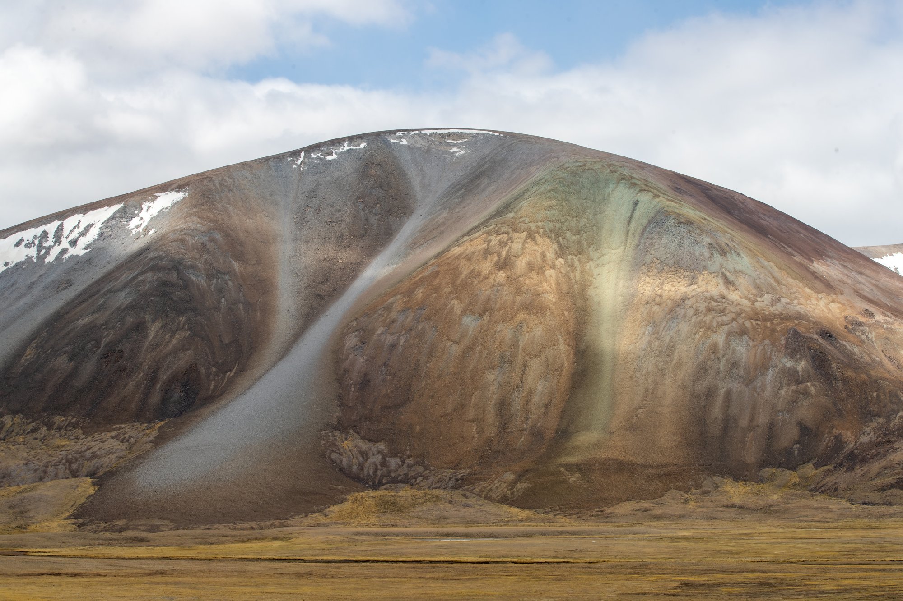
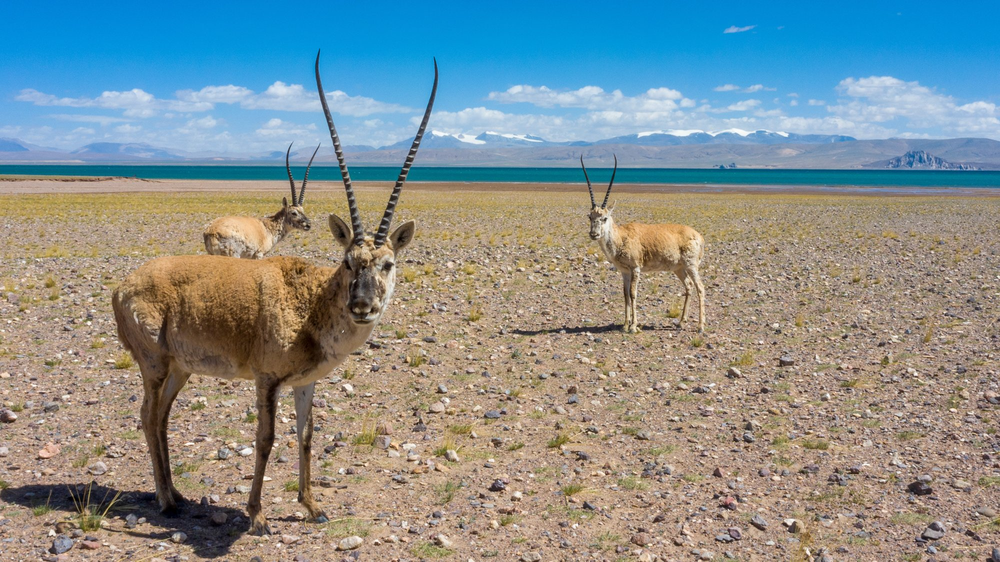
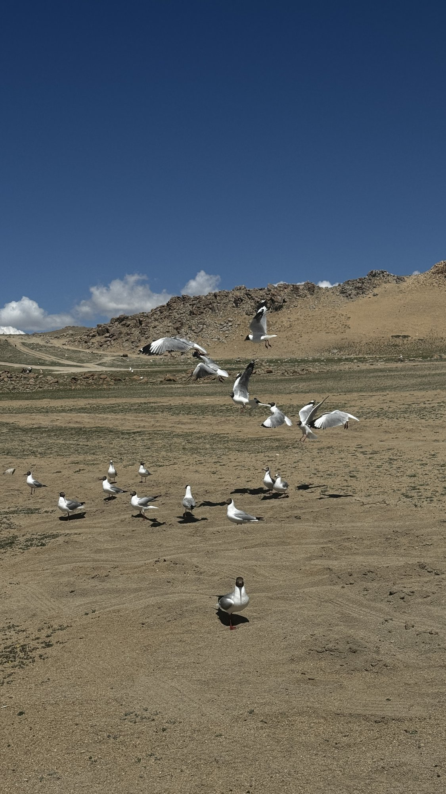
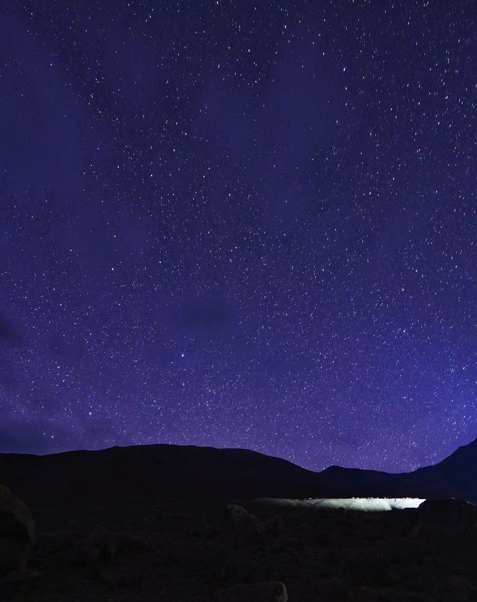
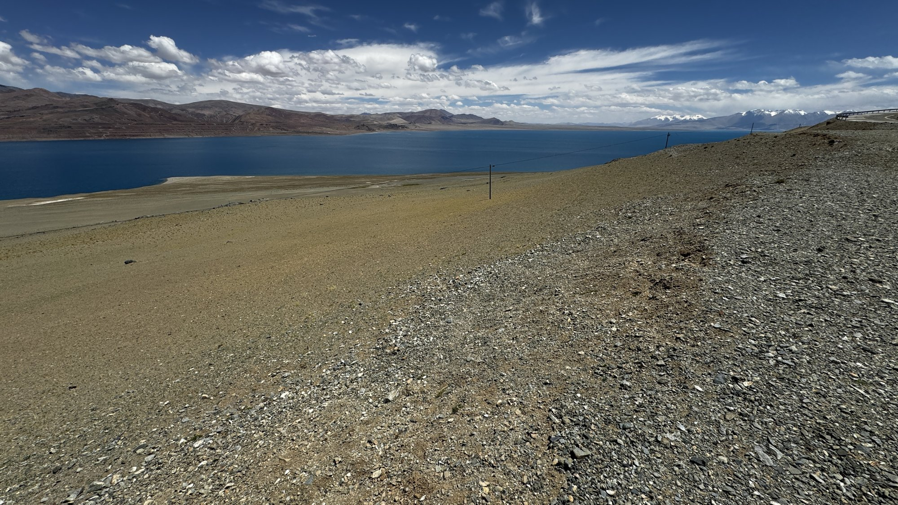
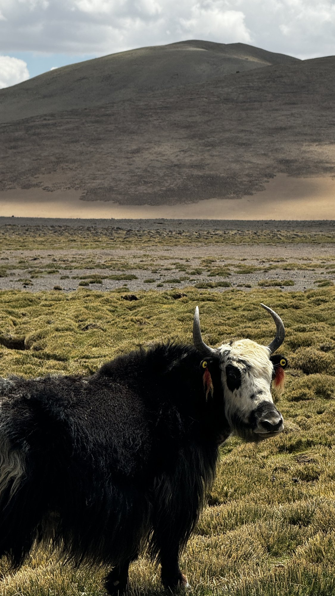

影像记忆
班公湖 · 野生动物掠影





野性天堂 · 生命之源
蔚蓝宝石般的湖面，高原生灵的自由天地

横跨中印边界的蔚蓝长湖
班公湖，藏语意为"长脖子天鹅"，横跨中印边界，湖水因盐度不同一半咸一半淡，蔚蓝如宝石，在高原的阳光下波光粼粼。
湖中岛屿众多，栖息着大量的水鸟，是高原上难得的生命乐园。

羌塘草原上的野生动物
离开班公湖，我们驶入广袤的羌塘草原。这里是世界上海拔最高、面积最大的高原荒漠，也是野生动物的天堂。
藏野驴、藏羚羊、藏原羚在草原上自由奔跑，偶尔还能遇见高原精灵。它们才是这片土地真正的主人，展现着高原生命最顽强的野性之美。


